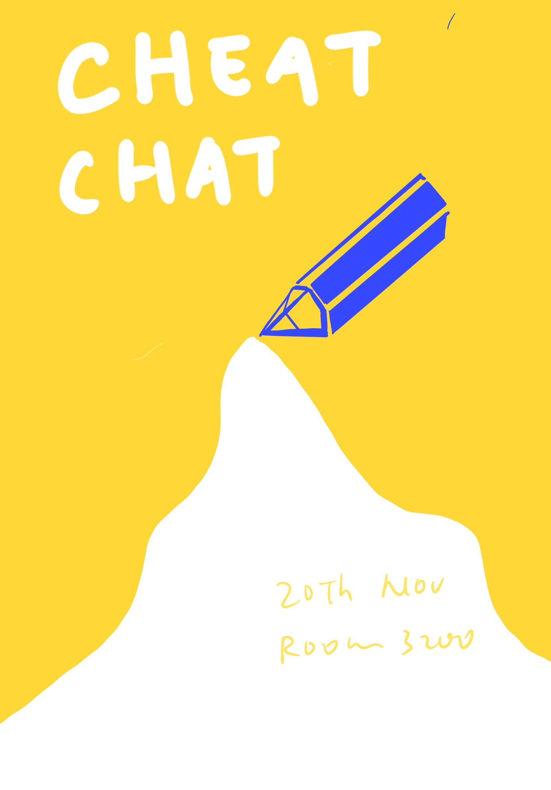
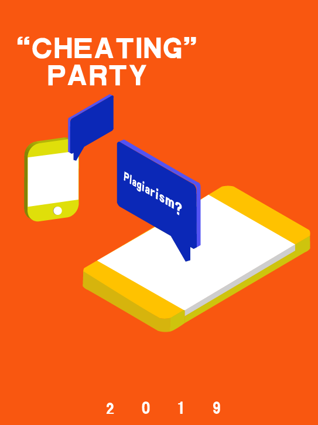
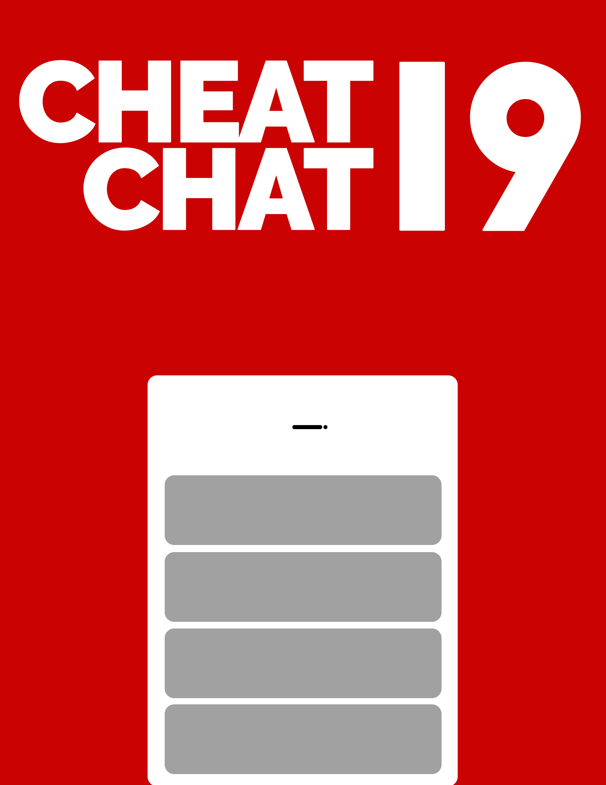
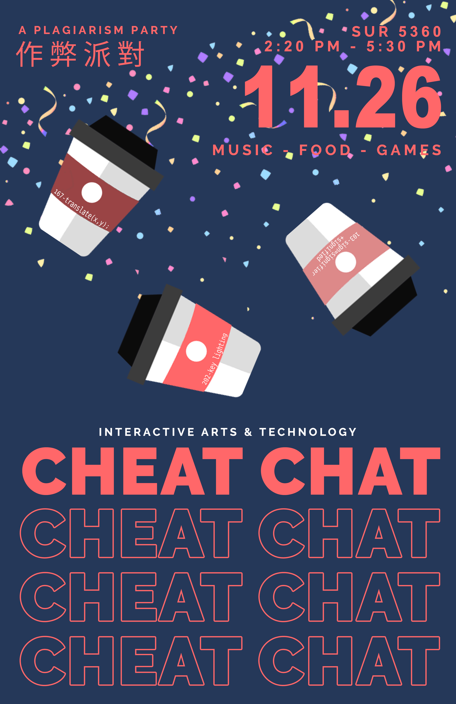
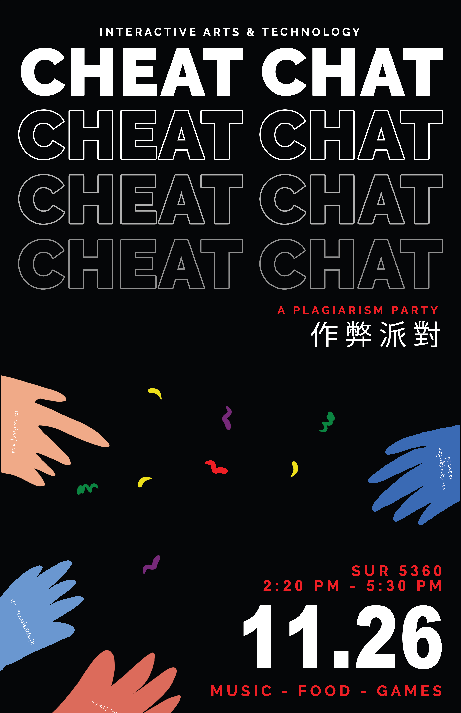
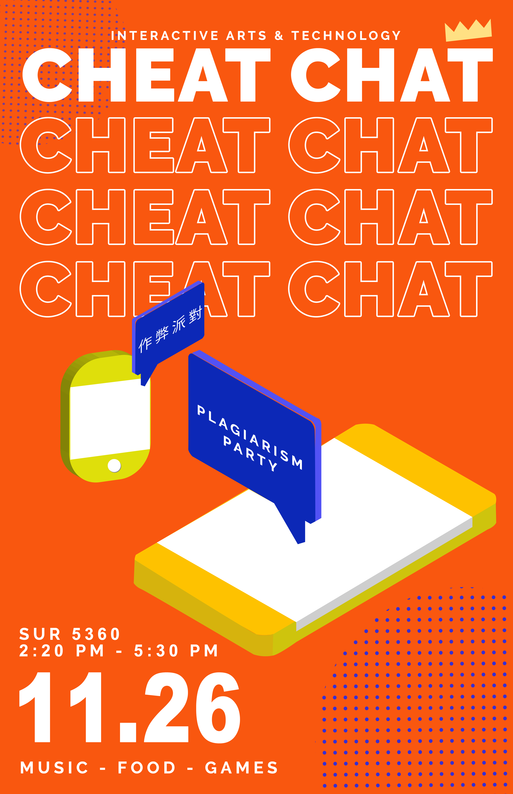

Research
The Problem with SFU's Code of Academic Honesty and Good Conduct
After analyzing SFU's academic code, we have narrowed our findings to three primary reasons why it
fails
to inform students effectively and succinctly of such conduct: unfamiliarity, inaccessibility, and
readability. With familiarity, we find that students may be aware of a general academic standard to be
followed at the university but unaware of the specifics due to infrequent exposure, typically only
through orientations or syllabi. With inaccessibility, we found it to be unclear where students can
retrieve this information on campus, while online the website is cluttered with a multitude of links,
easily confusing for newcomers. Such tedious processes easily disincentivizes students from actively
pursuing SFU's academic policies. Finally, the policies lack readability, being a large wall of text and
abstract in explanation. There is also an absence of examples and tutorials on the page which could have
aided students further.
We decided to investigate further through the perspective of a current SFU student and a newcomer. We
found several commonalities behind the roots of plagiarism such as unawareness of SFU's Code of Academic
Honesty and Good Conduct, indifference to such policies, overconfidence, and ignorance. One reason stood
out to us in particular, belonging mainly with newcomers and international students: cultural
differences.
Brainstorming
After researching a multitude of academic articles and reflecting on our group's primarily Asian heritage
and experiences we found stark contrasts in Asian and Western societies. Based on the idea of Eastern
collectivism versus Western individualism, we saw a clear connection between why there could be a
culture shock for international students. Being a team composed of primarily Chinese international
students, we decided to pursue this further, having personal connections, experiences and a curiosity
for the adapting of cultures.
Framing the Solution
Narrowing Our Focus
A common experience that we shared was a feeling of disconnect and loneliness coming to a new school and
country, not having a familiar group of people to belong to. This was particularly a hard experience for
most of the members due to the drastic contrast in culture, being used to a more collectivist society as
we researched earlier. With this, we decided on going forth with a welcome party-like experience for
first year SIAT Chinese international students, to bring a sense of familiarity with these students
while integrating an informative workshop aimed towards combatting plagiarism. Targeting our event to
SIAT Chinese international students, we wanted to increase a sense of community within this demographic
which in turn follows common SIAT practices, relying heavily on group projects and networking amongst
students.
Initial Poster Drafts

Cheat Chat "Pencil" by Yuqingqing M.

Cheating Party by Yuqingqing M.

Cheat Chat "Stationary" by Tristan T.

Cheat Chat "Phone" by Tristan T.
What is Plagiarism? by Ningxuan Z.
The Design
Poster Campaign

Poster 2: "Coffee Cup Sleeves"

Poster 3: "Handwritten"

Poster 5: "Mobile Phones"